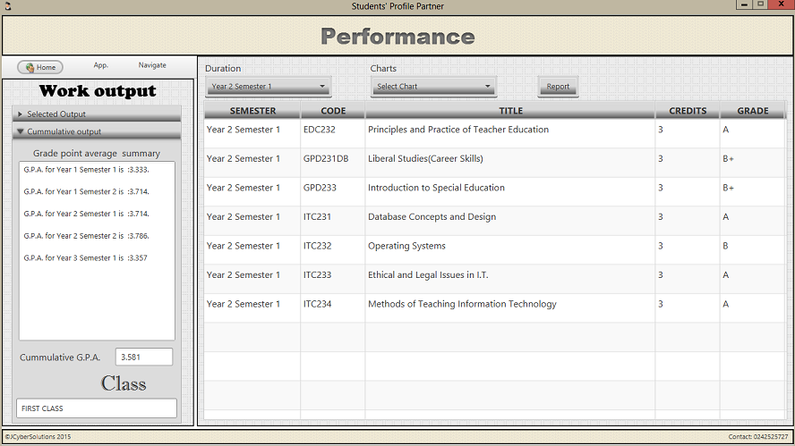

Students' Profile Partner
Extending The Students' Information System Into a Personal Academic Profiler: Case Study COLTEK
Codebase on github
This is an academic information management system built to assist student of the University of Education Winneba. The aim of this application is to offer students more functionalities to manage academic information.
Home Screen
The initial user entry point is the home page. The home page has a number of components namely the system dashboard, the authentication module, the external hyperlinks and the description section. When the program is launched, the system dashboard in restricted mode. A successful user authentication changes the system dashboard from restricted mode to active mode. The description section provides brief information about each function on the system dashboard. The description section work when the system dashboard is in active mode. The page further presents the system login module for user authentication. The login module has three sub-links in addition to the ‘Sign in’ button. The sign up link (active in restricted mode) loads the user registration module for new users. The ‘Forget Password’ link activates the password reset module which sends new passwords to users through electronic mail. The ‘Sign out’ link enables the user to log out of a session.
Course Registration Screen
The very first objective of this project was to enable students maintain a list of registered courses for each semester. The course registration module of the Students’ Profiler Application works to achieve this objective. As part of preparatory activities required of users at the start of a semester, courses that form the basis for schedules and academic events must be recorded in the name of the user concerned. The course registration module comes with two sections; the registration section and the summary section. By checking the corresponding checkbox, a user registers a course for a particular semester. Optionally, the user may supply the name of the lecturer in charge of that particular course. On completing a check, the list of registered courses, the number of course and the total credit hours for the semester are automatically updated at the summary section of the registration screen. At the summary section, users are presented a print-out button to create a report of registered courses for a semester in portable document format (pdf).
Scheduling Screen

Where successful students go, effective time management plays a crucial role. Students Profile Partner provides students the facility to schedule routine activities that are repeated on daily basis all week round and non-routine that occurs once at any particular time. The scheduling module comes with the scheduler itself and event logging system. The scheduler allows users to merge their personal schedules with that of the lecture schedule for a particular semester. The scheduling module has the input section where activities, venues, time and dates are specified. The other section is the output section where the schedule (time table) is displayed organized according to the days of the week..
Academics Screen
The ability of students to manage information about their course work in the form of assignments quizzes and examinations has a telling influence on the performance of students. Users of this system having gone through course registration can create logs of academic activities during a particular semester. With reminder capabilities, logs created from the academics module enable students to follow closely their individual work load for any course in the semester. The input section has two panels; one for the input of assignment and the other for quizzes and examinations. Course, venue, date and time are the major input needed to create an entry in the academics module. The output section displays logs for a particular semester. Logs to be displayed can be filtered according to assignment, quiz or examination.
Grading Screen
The responsibility of assessing the performance of students rests with the lecturer that take a particular course. During the semester, quizzes, assignments and examinations are conducted to determine the levels of attainment made by students in any course area. The climax of these activities is when students’ grades are published. A single grade usually does not paint a complete picture of a student’s performance therefore collecting all grades for a semester in one place makes performance monitoring easy and fun. The grading module of the application provides student with the facility to collect grades for registered courses. This module provides a specially designed Grade Point Average (GPA) calculator which is aware of courses for each semester. The grading module collects and stores grades obtained in each course for each semester. The summary section displays various information and a general summary of grades obtain in the semester under review.
Performance Screen
The performance module of the application is closely tied to the grading module. The performance module like the grading module presents summary of the grades obtained as well as cumulative summery of performances accumulated from other semesters. The performance module organizes and presents students’ grades without the ability to change grade as found in the grading module. Based on the cumulative grades, the performance module determines the class the student will attain when the student graduates. A statistical feature in the performance module visualizes students’ performance by plotting bar charts and line graphs with semesters against Grade Point Averages (GPAs) or Semesters against Cumulative Grade Point Averages (CGPAs). In addition to the visualization of performances, the student is given the avenue to generate reports on their performances.
Wallet Screen
The wallet module of the system helps the student to create monitory logs. The student’s ability to monitor his or her own spending during times spent on campus is equally important as far as students’ information management goes. The system provides students with the avenue to log all financial inflows and outflow. The input section of the module helps organize logs under income or expenditure. Other input details include title, amount, date, time and comments. The output section displays logs and has filters for income only and expenditure only. The output section further displays total income as well as total expenditure.
Document Screen
Records keeping even at students’ level is not a trivial job. Records such as payment of fees are always backed by document in the form of receipts or payment vouchers. On the course work front, collection of registration print-outs and course outlines are a few of important documents that must be kept by students all the time. Students’ Profile Partner comes with the document module that assists students to store soft copies of important document for future use. The input section has a title input, a file chooser, a section selector and comments. The output is a list of saved documents. On selecting an item from the output list, a user can click on the retrieve button to retrieve the referenced document from file storage into a pre-determined directory on the user’s computer. Document storage is also organized into semesters just like all other modules in the system.
Settings Screen
The settings module has three components; instructions, personal details and general settings. The instructions component provides information about how to use the other two components. The pesonal details component enables users to make changes to their personal information collected when the user signed up. Key among the details is password reset where users can change their existing passwords. The third component is general settings from which users can specify output folder where reports and document will be kept. The general settings also provides avenues for performing database backup and restore operations. Other settings include specifying details of the current semester across the entire system.
For suggestions, bug fixes or any other complains, contact appiahbaahjake@gmail.com
© Jacob Appiah Baah 2016